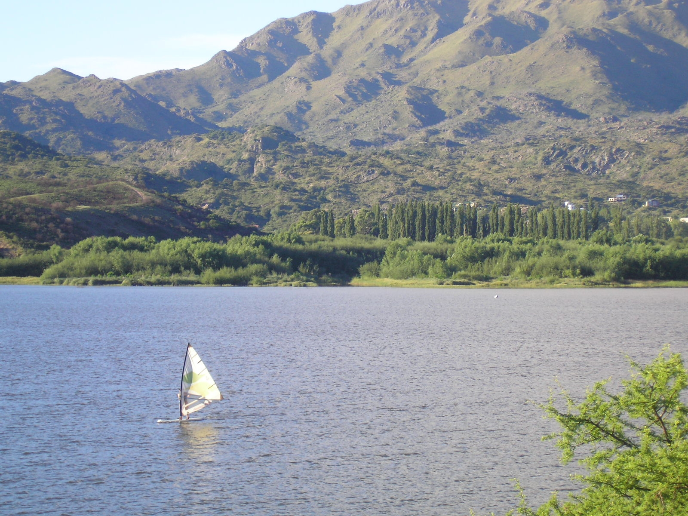

Bienvenidos a la guía turística: "Explorando San Luis"
Descubrí la naturaleza, los paisajes y destinos turísticos de nuestra provincia.
Conocé San Luis
San Luis es una provincia argentina que se destaca por sus sierras, paisajes naturales y atractivos turísticos. Te invitamos a descubrir algunos de sus destinos más hermosos.
EmpezarDescubrí nuestros paisajes
